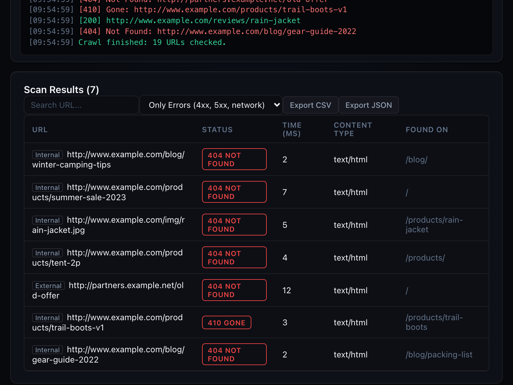

Find broken links and security gaps before your visitors do.
Web Scanner crawls your site from the browser, checks every internal and external link, and reviews the security basics: headers, cookies, CSP, mixed content, SPF and DMARC, exposed files.
Passive checks only. Nothing you scan is sent to us.

What it checks
Two scanners in one panel, built for people who maintain websites.
Dead links
Crawls the pages of your site, checks every link once, follows redirects and sorts results into broken, redirected, blocked and network errors.
Where it broke
Every broken link shows the page it was found on, so you know exactly what to edit.
Security headers
HSTS, Content-Security-Policy, X-Frame-Options, Referrer-Policy and more, with what each missing header means.
Cookies and storage
Missing Secure, HttpOnly and SameSite flags, and sensitive-looking keys in browser storage.
Email spoofing
SPF and DMARC records of your domain, with the policy they actually enforce.
Fix snippets
Ready-to-paste configuration for Nginx, Apache, Cloudflare, Next.js and Vite for each finding.
Pricing
Free covers small sites. Pro is a single payment, no subscription.
Free
- Link scans up to 150 URLs each
- Full results table with filters
- Security scan with every finding
- Fix snippet for the top finding
Pro Lifetime
- Unlimited URLs per scan
- All fix snippets
- CSV, JSON and printable reports
- Network Inspector
- Scan history
Questions
Does it attack or stress the sites I scan?
No. It sends ordinary requests, the same a browser sends when you open a page, with a configurable concurrency limit and delay. It never sends exploit payloads.
What happens to my data?
Results stay in your browser. The extension talks to the sites you scan, to Cloudflare's public DNS for SPF and DMARC lookups, and to Lemon Squeezy for license checks. Details are in the privacy policy.
How do I activate Pro?
After checkout you receive a license key by email. Open the extension, click Pro and paste the key. One license works on up to 5 browsers.
Can I get a refund?
Yes, within 14 days of purchase. Reply to your receipt email.